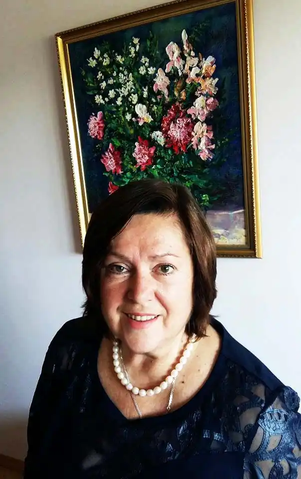

Поетеса, прозаїк, публіцист, талановитий журналіст, одна з найяскравіших особистостей в українській літературі Любов Василівна Голота народилась 31 грудня 1949 року в м. Кривий Ріг на Дніпропетровщині у родині гірників.
1972 року закінчила філологічний факультет Дніпропетровського університету й одразу вирішила спробувати себе у творчій професії журналіста, яка приваблювала молоду дівчину можливістю нести людям правду, примножувати у світі добро, боротися за справедливість, впливати на формування суспільної свідомості. Любов Голота працює кореспондентом обласних газет "Прапор юності" та "Зоря", редактором на радіо. І одночасно пише вірші. Наскрізним образом її поетичних творів стає український степ, рідна земля, яку дівчина відчуває усім серцем, глибоко й болісно.
Перша збірка "Народжена в степах", сповнена ліричної пристрасті, ніжності й теплоти, виходить у 1976 році. За цю книгу Любов Голоту приймають до Національної спілки письменників України (1977). Незабаром побачила світ її наступна поетична книга "Весняне рівнодення" (1979), а вже згодом вийшли "Горицвіт" (1980), "Вікна" (1983). У 1983 році поетеса переїздить до Києва, працює у видавництвах "Молодь", "Радянський письменник" і створює чудові збірки віршів "Жінки і птиці" (1985), "Дзеркала" (1988), "На чоловічий голос" (1996), "Опромінена часом" (2001). У 1995 році Любов Василівна стає головним редактором всеукраїнського культурологічного просвітницького тижневика "Слово Просвіти", який висвітлює проблеми духовності й культури, сприяє розвитку національно-демократичних тенденцій у сучасному українському суспільстві й досить популярний серед української інтелігенції. Постійні автори тижневика — відомі політичні та громадські діячі, письменники, культурологи, діячі мистецтв. Опікуючись "Словом Просвіти", будучи постійною ведучою програм "Знакова постать", "Вечірні зустрічі", "На перетині думок" на Українському радіо, Любов Голота продовжує писати й видає дві публіцистичні книги — "Дитя людське" (2002) і "Сотворіння" (2005). Через два роки вперше побачив світ новий роман письменниці "Епізодична пам'ять". Це роман-осмислення про покоління 70-х років, вихідців із сіл, які потрапили до міст, про епоху Брежнєва і тоталітаризм радянського суспільства. За словами самої авторки, в романі вона описала все, що колись відбувалося на її очах. За роман "Епізодична пам'ять" Л.В. Голота удостоєна Національної премії України ім. Тараса Шевченка (2008). Л.В. Голота — член центрального правління всеукраїнського товариства "Просвіта" ім. Т.Г. Шевченка, організатор першого в незалежній Україні жіночого культурологічного журналу "П'ята пора". Вона є автором книжок для дітей та сценаріїв багатьох столичних масових свят і дійств. Л.В. Голота — володарка премії Грузії імені Володимира Маяковського (1981), премії імені Володимира Сосюри "Любіть Україну" — за найкращі поетичні публікації (2001). В 2008 р. її обрано почесним громадянином м. Скоп'є і відзначено першою премією за поетичну книгу в Македонії. В 2011 р. радіоп'єсу "Вісник" Л.В. Голоти відзначено першою премією IV всеукраїнського конкурсу радіоп'єс Національного радіо. Творче і життєве кредо Любові Василівни можна проілюструвати рядками з її власного твору: "Милостивий, Ти до мене добрий: Полином нехай не заросте Та дорога, за якою обрій — Україна, дівчинка і степ!" Упорядкувала книгу "Життя і чин Анатолія Погрібного. Наукові розвідки, статті, спогади." / Київ: ВЦ "Просвіта", 2011—487 сторінок, наклад 1000 примірників. У 2016—2019 була членом Комітету з Національної премії України імені Тараса Шевченка (з грудня 2016).